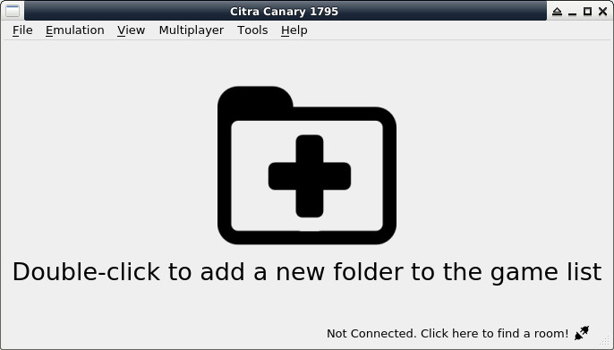

參考資訊：
https://hub.docker.com/r/greatwizard/devkitarm-3ds
司徒目前使用Docker當作開發環境，安裝步驟如下：
$ sudo apt-get install docker* container* -y
$ cd
$ git clone https://github.com/morgenman/nds-docker
$ cd nds-docker
$ sudo docker build -t nds-env .
Sending build context to Docker daemon 21.04MB
Step 1/4 : FROM docker.io/devkitpro/devkitarm AS devkitpro
---> b40b3cbf4c5a
Step 2/4 : ADD NitroEngine.tar.gz /opt/devkitpro
---> Using cache
---> 975106deea7c
Step 3/4 : RUN cd /opt/devkitpro/NitroEngine; make
---> Using cache
---> ea9f9aee48c6
Step 4/4 : WORKDIR /source
---> Using cache
---> 8da2a32afc12
Successfully built 8da2a32afc12
Successfully tagged nds-env:latest
$ sudo docker run --rm -it -v $(pwd):/source nds-env /bin/bash
root@b0c0692e89e1:/source# /opt/devkitpro/devkitARM/bin/arm-none-eabi-gcc -v
Using built-in specs.
COLLECT_GCC=/opt/devkitpro/devkitARM/bin/arm-none-eabi-gcc
COLLECT_LTO_WRAPPER=/opt/devkitpro/devkitARM/bin/../libexec/gcc/arm-none-eabi/12.2.0/lto-wrapper
Target: arm-none-eabi
Configured with: ../../gcc-12.2.0/configure --enable-languages=c,c++,objc,lto --with-gnu-as --with-gnu-ld --with-gcc --with-march=armv4t --enable-cxx-flags=-ffunction-sections --disable-libstdcxx-verbose --enable-poison-system-directories --enable-interwork --enable-multilib --enable-threads --disable-win32-registry --disable-nls --disable-debug --disable-libmudflap --disable-libssp --disable-libgomp --disable-libstdcxx-pch --enable-libstdcxx-time=yes --enable-libstdcxx-filesystem-ts --target=arm-none-eabi --with-newlib --with-headers=../../newlib-4.2.0.20211231/newlib/libc/include --prefix=/home/davem/projects/devkitpro/tool-packages/devkitARM/src/build/x86_64-linux-gnu/devkitARM --enable-lto --disable-tm-clone-registry --disable-__cxa_atexit --with-bugurl=http://wiki.devkitpro.org/index.php/Bug_Reports --with-pkgversion='devkitARM release 59' --build=x86_64-unknown-linux-gnu --host=x86_64-unknown-linux-gnu --with-gmp= --with-mpfr= --with-mpc= --with-isl= --with-zstd= --with-gmp=/opt/devkitpro/crosstools/x86_64-linux-gnu --with-mpfr=/opt/devkitpro/crosstools/x86_64-linux-gnu --with-mpc=/opt/devkitpro/crosstools/x86_64-linux-gnu --with-isl=/opt/devkitpro/crosstools/x86_64-linux-gnu --with-zstd=/opt/devkitpro/crosstools/x86_64-linux-gnu
Thread model: single
Supported LTO compression algorithms: zlib zstd
gcc version 12.2.0 (devkitARM release 59)
P.S. host:$(pwd), docker:/source
模擬器則是使用citra-emu，由於司徒目前還是使用Debian 10(x64)，因此，需要手動編譯安裝新版ffmpeg，安裝步驟如下：
$ cd $ wget https://ffmpeg.org/releases/ffmpeg-3.4.12.tar.xz $ xz -d ffmpeg-3.4.12.tar.xz $ tar xvf ffmpeg-3.4.12.tar.xz $ cd ffmpeg-3.4.12 $ ./configure --enable-shared $ make -j4 $ sudo make install $ sudo ldconfig $ cd $ wget https://github.com/steward-fu/website/releases/download/3ds/bin_citra-linux-20200627-61f0e52.7z $ 7za x bin_citra-linux-20200627-61f0e52.7z $ sudo cp -a canary/* /usr/local/bin/ $ citra-qt
